CPU: 由运算器、控制器、寄存器等器件构成，依靠内部总线相连；
- 运算器: 信息处理；
- 寄存器: 信息存储；
- 控制器: 控制器件进行工作；
- 内部总线: 连接器件，传送数据；
8086CPU有14个寄存器，分别是AX、BX、CX、DX、SI、DI、SP、BP、IP、CS、SS、DS、ES、PSW；
通用寄存器
8086CPU的所有寄存器都为16位，可以存放$2\ Byte$；
通用寄存器: AX、BX、CX、DX常被用于存放一般性的数据，被称为通用寄存器；
在寄存器中，存储模式为小端法；
每个通用寄存器都可分为2个可独立使用的8位寄存器，例AX的低8位(0-7)构成AL，高8位(8-15)构成AH；
字在寄存器中的存储
高位字节存储于高8位寄存器，低位字节存储于低8位寄存器；
例如将1145H存入AX，AH中存储11H，AL中存储45H；
进制的讨论
二进制: 计算机中的数据本身以二进制形式存放；
十进制: 人类本身习惯的进制；
十六进制: 一位相当于四位二进制；计算机中的数据大多以8位数据形式出现，如内存单元、寄存器，因此使用十六进制更为直观；
以示区分，十进制后不加后缀，二进制后加B，十六进制后加H；
如4421=1145H=0001000101000101B;几条汇编指令
汇编指令 控制CPU完成的操作 用高级语言的语法表述 mov ax,1145 将1145送入寄存器AX AX = 1145 mov ah,14 将14送入寄存器AH AH = 14 add ax,11 将寄存器AX中的数值加上11 AH += 11 mov ax,BX 将寄存器BX中的数据送入寄存器AX AX = BX add ax,bx 将寄存器AX与BX中的数值相加并存在AX中 AX += BX 注意: 汇编语言汇编指令与寄存器名称不区分大小写；
在进行mov和add操作时，al被认为是一个独立的寄存器，所进行的8位运算产生的进位并不会储存在ah中；
在进行数据传输或运算时，要注意指令的两个操作对象位数应当一致例如1
2
3
4
5
6mov ax,bx
mov bx,cx
mov ax,11H
mov al,11H
add ax,bx
add ax,1145H
都是正确的指令；1
2
3
4mov ax,bl ;8位寄存器与16位寄存器之间传送数据
mov bh,ax ;16位寄存器与8位寄存器之间传送数据
mov al,1145H ;将高于8位的数据写入8位寄存器
add al,1145H ;将高于8位的数据加入8位寄存器
都是错误的指令，两个操作对象位数不一致。
检测点2.1
(1) 写出每条汇编指令执行后相关寄存器中的值1
2
3
4
5
6
7
8
9
10
11
12
13
14mov ax,62627 ;AX=F4A3H
mov ah,31H ;AX=31A3H
mov al,23H ;AX=3123H
add ax,ax ;AX=6246H
mov bx,826CH ;BX=826CH
mov cx,ax ;CX=6246H
mov ax,bx ;AX=826CH
add ax,bx ;AX=04D8H
mov al,bh ;AX=0482H
mov ah,bl ;AX=6C82H
add ah,ah ;AX=D882H
add al,6 ;AX=D888H
add al,al ;AX=D810H
mov ax,cx ;AX=6246H
(2) 只能使用目前学过的汇编指令，最多使用4条指令，编程计算2的4次方。1
2
3
4mov ax,2
add ax,ax
add ax,ax
add ax,ax
物理地址
- 物理地址: 每一个内存单元在内存地址空间中的唯一的地址，CPU通过地址总线将其送入存储器；
接下来探讨8086CPU如何在内部形成内存单元的物理地址；
16位结构CPU
16位结构(字长为16位)描述了一个CPU具有以下几方面的结构特性：
- 运算器一次最多可处理16位数据；
- 寄存器的最大宽度为16位；
- 寄存器和运算器之间的通路为16位；
8086CPU给出物理地址的方法
8086CPU有20位地址总线，寻址能力达到$1\ MB$。但8086CPU是16位结构，如果地址只是简单地从内部发出，寻址能力只有$64\ KB$；
8086CPU在内部通过用两个16位地址合成的方法来形成20位物理地址；
地址加法器采用$物理地址\ = 段地址 \times 16\ +\ 偏移地址$来合成物理地址；
例如8086CPU要访问地址为11451H的内存单元：
- 相关部件提供16位的段地址和偏移地址 段地址:
1145H偏移地址:0001H - $物理地址\ = 段地址 \times 16\ +\ 偏移地址$，得到
11451H
位移运算
$段地址 \times 16$更常见的表述是左移4位;
一个$a$进制数左移$b$位相当于乘以$a^b$;
“段地址*16+偏移地址=物理地址”的本质含义
8086CPU寻址模式: $基础地址\ +\ 偏移地址\ = 物理地址$，
类似于通过参照物描述物体的位置。
段的概念
在编程中可以根据需要，将若干地址连续的内存看作一个段，用$段地址 \times 16$定位段的起始地址，用偏移地址定位段中的内存单元。
段的起始地址一定是16的倍数；偏移地址为16位，一个段的长度最大为$64\ KB$
内存单元地址小结
在8086PC机中，一般不使用物理地址来描述内存地址，而是使用
- (段地址):(偏移地址)
- (段地址)中的(偏移地址)
这两种相似的方式来描述。
检测点2.2
(1) 给定段地址为0001H，仅通过变化偏移地址寻址，CPU的寻址范围为00010H到1000FH。
(2) 有一数据存放在内存20000H单元中，现给定段地址为SA,若想用偏移地址寻到此单元，则SA应满足的条件是：最小为1001H，最大为2000H。
段寄存器
段寄存器: 提供段地址的部件。
8086CPU共有4个段寄存器，分别为CS、DS、SS、ES，本章只涉及CS；
CS与IP
- CS: 代码段寄存器；
- IP: 指令指针寄存器；
在8086PC机中，任意时刻，8086CPU将CS:IP指向的内容当作指令执行。
读取一条指令后，IP中的值自动增加，以使CPU可以读取下一条指令。
8086CPU的工作过程可以简要描述为:
(1) 从CS:IP内存单元读取指令，读取的指令写入指令缓冲器；
(2) $IP\ =\ IP\ +\ 所读取指令的长度$，指向下一条指令；
(3) 执行指令。转到步骤(1)，循环；
8086CPU在加电启动或复位后，CS和IP被设置为CS=FFFFH,IP=0000H，因此内存FFFF0H单元中的指令是8086CPU开机后执行的第一条指令；
CPU将CS:IP指向的内存单元中的内容视作指令；
修改CS、IP的指令
程序员可以通过改变CS、IP中的内容来控制CPU执行目标指令；
- 修改通用寄存器的指令:
mov传送指令； - 修改CS、IP的指令:
jmp转移指令；
同时修改CS、IP:1
2jmp 段地址:偏移地址 ;用指令中给出的段地址修改CS，偏移地址修改IP
jmp 1145:1 ;执行后: CS=1145H, IP=0001H, CPU从11451H处读取指令
仅修改IP:1
2jmp 某一合法寄存器
jmp ax ;mov IP,axjmp ax作用类似于mov IP,ax，但是并没有后者这种用法；
相应地jmp 1145:1类似于mov CS,1145H,mov IP,1H
代码段
- 代码段: 通过将一段长度为$N(N \leq 64\ KB)$的代码存放于一组地址连续、起始地址为16的倍数的内存单元中，从而定义了一个代码段；
执行代码段的指令，须让CS:IP指向所定义的代码段中的第一条指令；检测点2.3
下面3条指令执行后，CPU几次修改IP？都是在什么时候？最后IP中的值为多少？1
2
3
4
5
6
7;第1次
mov ax,bx
;第2次
sub ax,ax
;第3次
jmp ax
;第4次,IP=0H实验1 查看CPU和内存，用机器指令和汇编指令编程
1.预备知识: Debug的使用
什么是Debug？
Debug是DOS、Windows都提供(现在好像不提供了)的实模式(8086方式)程序的调试工具。使用它，可以查看CPU各种寄存器中的内容、内存的情况和在机器码级跟踪程序的运行。
我们用到的Debug功能
- 用Debug
R命令查看、修改CPU寄存器的内容； - 用Debug
D命令查看内存的内容； - 用Debug
E命令修改内存的内容； - 用Debug
U命令将内存中的机器指令翻译为汇编指令； - 用Debug
T命令执行一条机器指令； - 用Debug
A命令以汇编指令格式在内存中写入一条机器指令；
以后的实验中还会用到P命令；
进入Debug
Debug是在DOS方式下使用的程序，因此就需要用到我们的DOSBox了;
根据阿柔的汇编语言札记-0 学习环境配置完成基础配置后，运行DOSBox；
在打开的命令行窗口中运行debug；
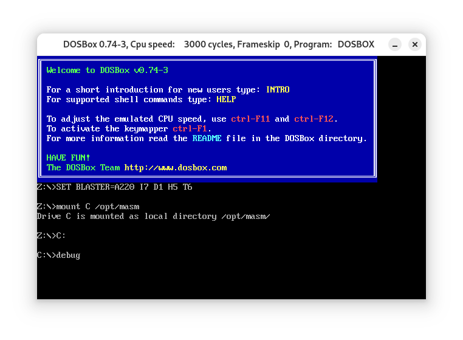
用R命令查看、修改CPU寄存器的内容；
我们已经知道了AX、BX、CX、DX、CS、IP这6个寄存器，现在看一下它们之中的内容。
注意CS与IP，CS=072F,IP=0100，也就是说，内存072F:0100处的指令为CPU当前要读取、执行的指令。在所有寄存器的下方，Debug还列出了CS:IP所指向的内存单元处所存放的机器码，并将它翻译为汇编指令，当然在上图中是0000。
还可以用R命令修改寄存器中的内容；
用r ax修改，出现;提示符后输入要写入的数据；
同样可以修改CS:IP；
用D命令查看内存中的内容
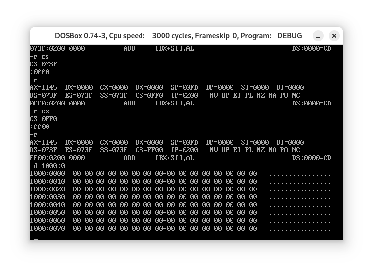
可以使用
d 段地址:偏移地址查看内存；Debug将输出3部分内容：
- 中间是从指定地址开始的128个内存单元的内容，以十六进制格式输出，每行从16的整数倍的地址开始，输出16个单元的数据。中间的
-是为便于查看； - 左边是每行的起始地址；
- 右边是每个内存单元中的数据对应的可显示的ASCII字符，没有则用
·代替；
如果打开debug立刻通过d查看内存，将会列出预设地址处的内容；
在使用过d之后再使用d，则会显示后续的内容；
d 起始内存地址 (结尾偏移地址)查看某一范围内的内存(结尾偏移地址不加默认输出128个字节)；
用E命令修改内存的内容
e 起始地址 数据 数据 ...；
e 起始地址以问答方式输入数据，每输入一个单元按一次空格，输入结束按回车；
也可以用e写入字符串；
用E命令写入机器码，用U命令查看内存中机器码的含义，用T命令执行内存中的机器码
向内存1000:0单元写入这样一段代码:1
2
3mov ax,0001
mov cx,0002
add ax,cx
对应的机器码是:1
2
3B8 01 00
B9 02 00
01 C8
接下来用u查看对应的汇编代码:
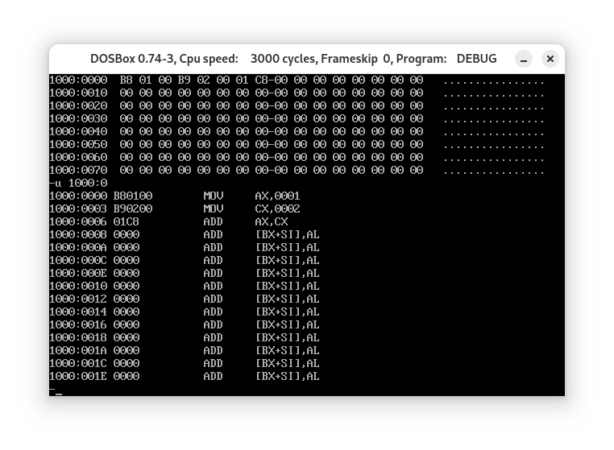
u命令的显示分为3部分，每条机器指令的地址、机器指令以及机器指令所所对应的汇编指令；
接下来用t执行机器指令，t命令可以执行CS:IP指向的一条或多条指令；
首先使CS:IP指向机器指令的地址1000:0:
接着使用t来执行，注意下图CPU各相关寄存器的变化:
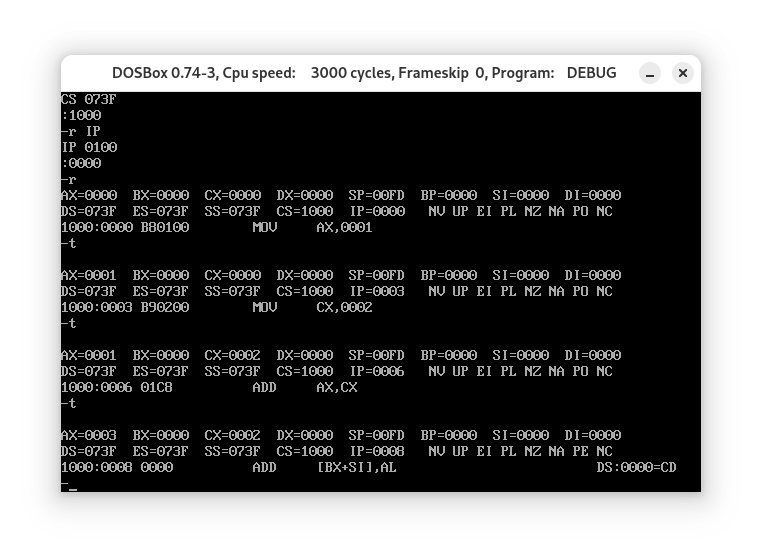
用A命令以汇编指令形式写入机器指令
用e写入机器指令有些过于繁琐了，可以使用a以汇编指令形式写入，输入完成后按回车:
同d，如果不输入写入地址，会从一个预设的地址开始写入指令；
2.实验任务
(1) 使用Debug，将下面的程序段写入内存，逐条执行，观察每条指令执行后CPU中相关寄存器中内容的变化。1
2
3
4
5
6
7
8
9
10mov ax,4E20
add ax,1416
mov bx,2000
add ax,bx
mov bx,ax
add ax,bx
mov ax,001A
mov bx,0026
add al,bl
add al,9C
勘误: 原书此处所有十六进制数后都加了H后缀，在Debug中默认数据为十六进制，加上会报错；1
2
3
4
5
6
7
8
9
10
11
12
13
14B8 20 4E
05 16 14
BB 00 20
01 D8
89 C3
01 D8
B8 1A 00
BB 26 00
00 D8
00 DC
00 C7
B4 00
00 D8
04 9C
逐条执行效果如下:
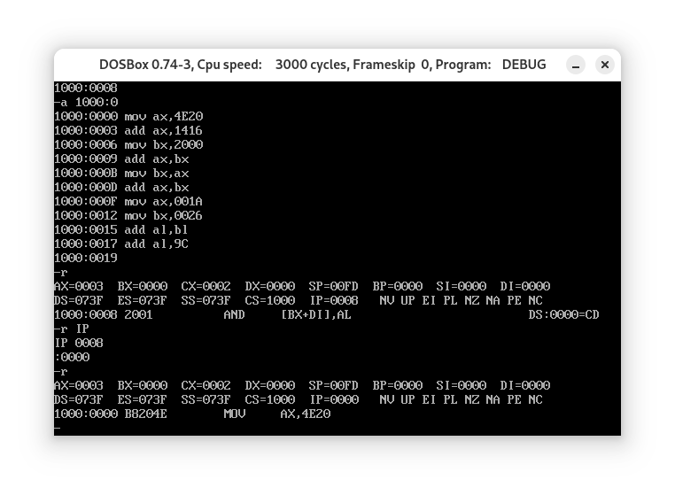
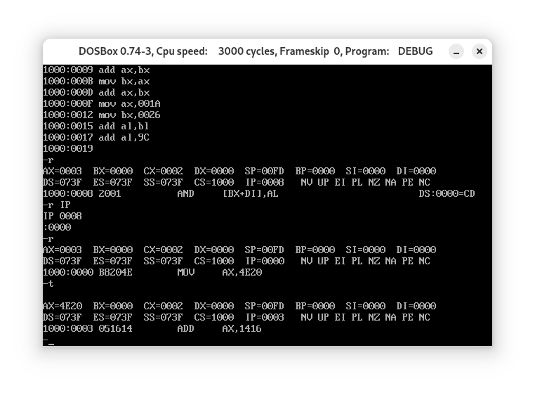
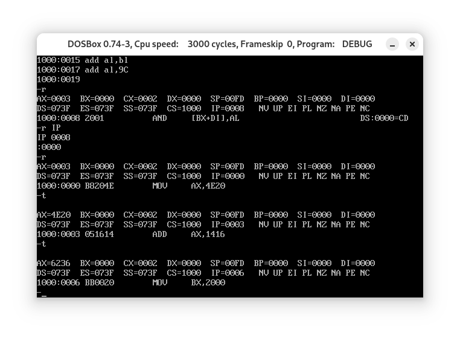
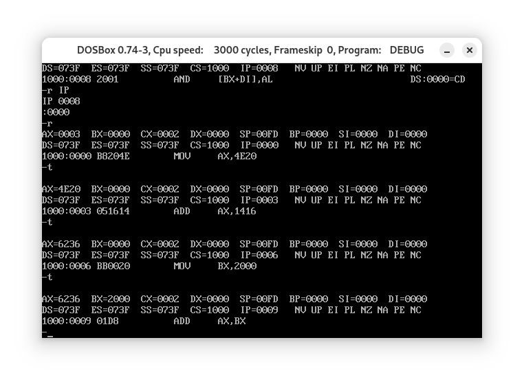
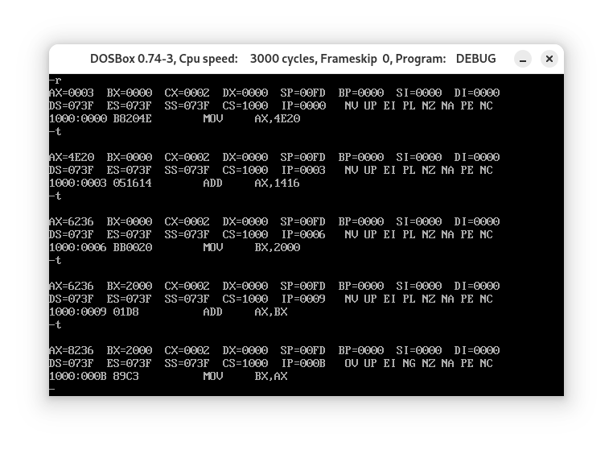
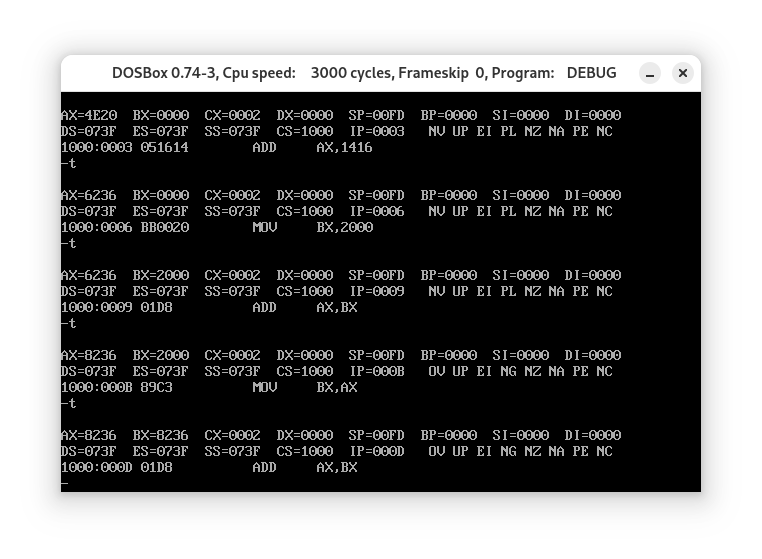
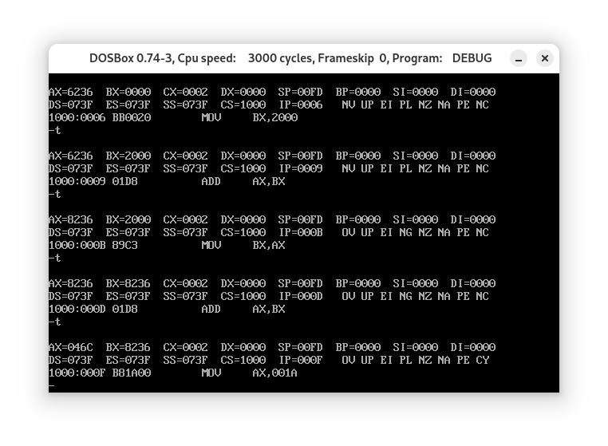
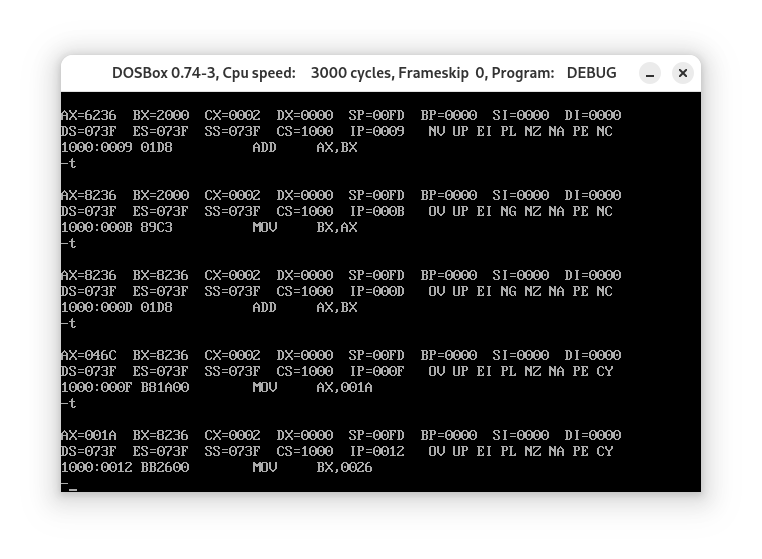
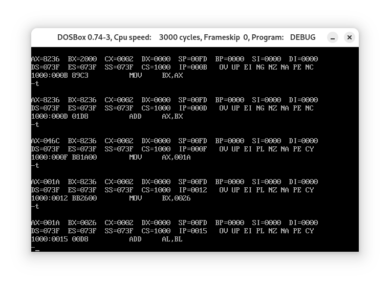
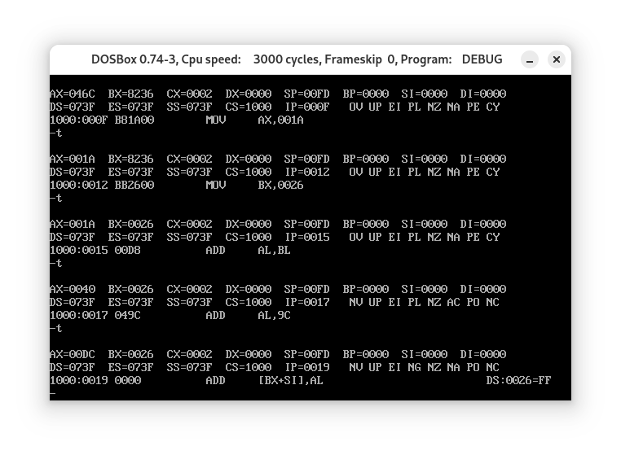
(2) 将下面3条指令写入从2000:0开始的内存单元中，利用这三条指令计算2的8次方1
2
3mov ax,1
add ax,ax
jmp 2000:0003
过程如下:
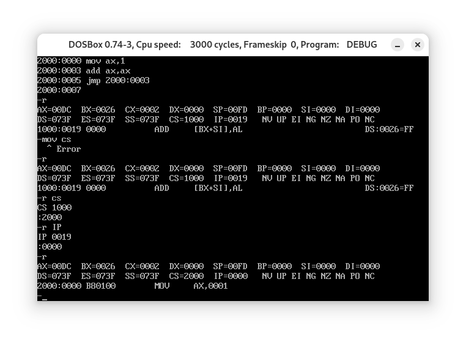
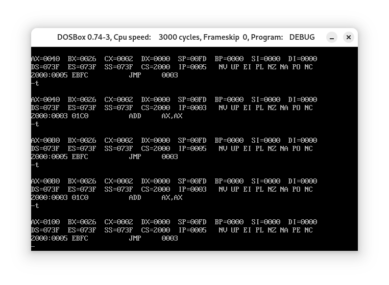
计算结果如上；
(3) 查看内存中的内容
PC机主板上的ROM中写有一个生产日期，在内存FFF00H-FFFFFH的某几个单元中，请找到这个生产日期并试图改变它。
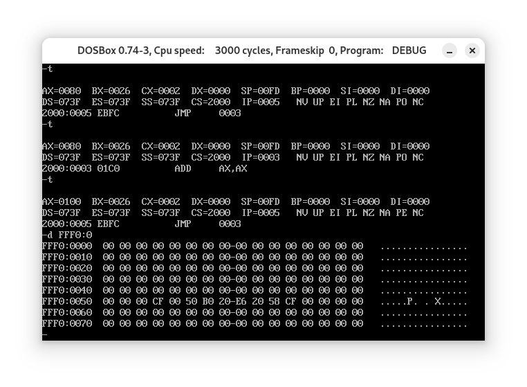
改变？这是ROM啊！
(4) 向内存从B8100H开始的单元中填写数据，如:
-e B810:0000 01 01 02 02 03 03 04 04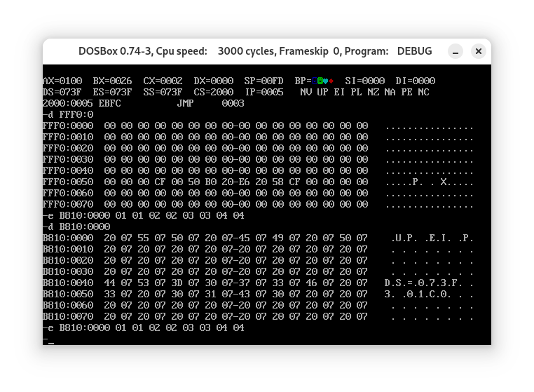
似乎有什么很可爱的东西……
毕竟这是显存嘛……
如果对实验的结果感到疑惑，请仔细阅读第一章中的1.15节